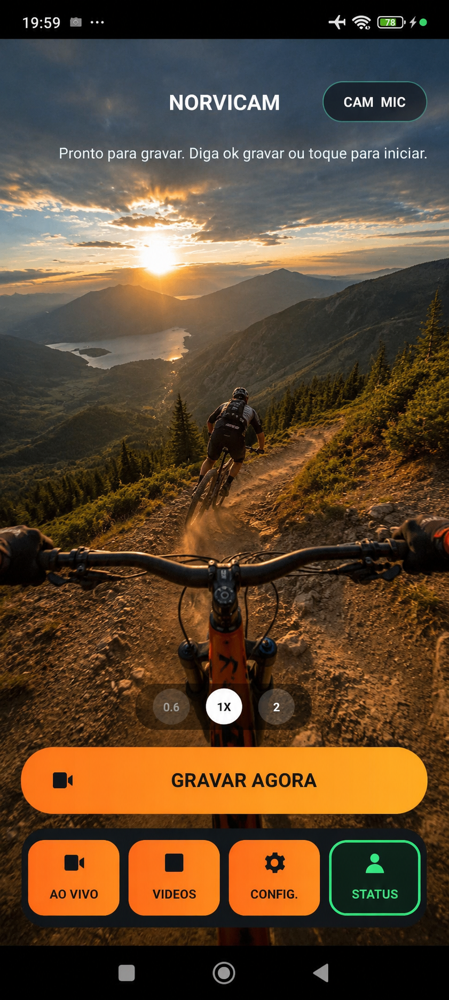
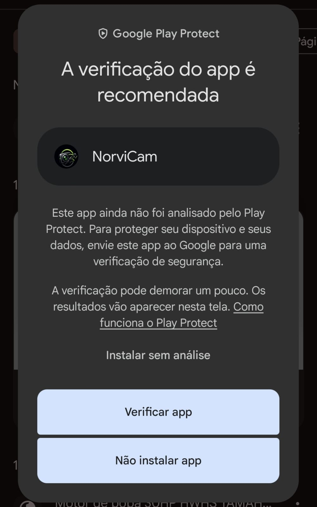
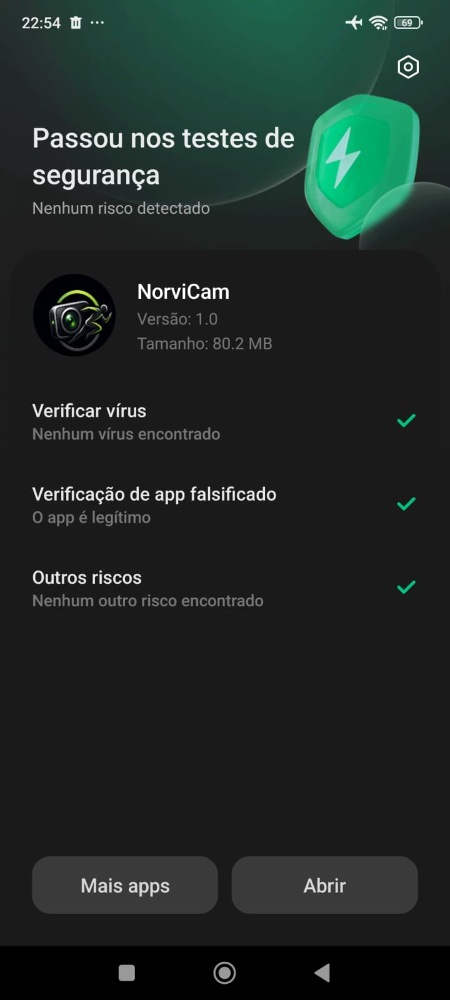
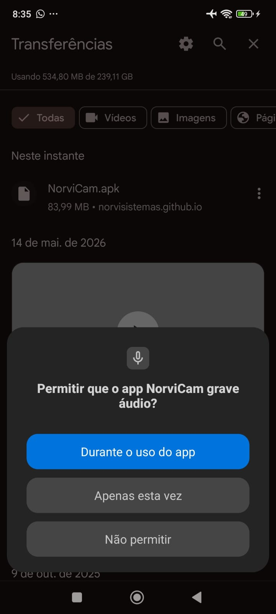
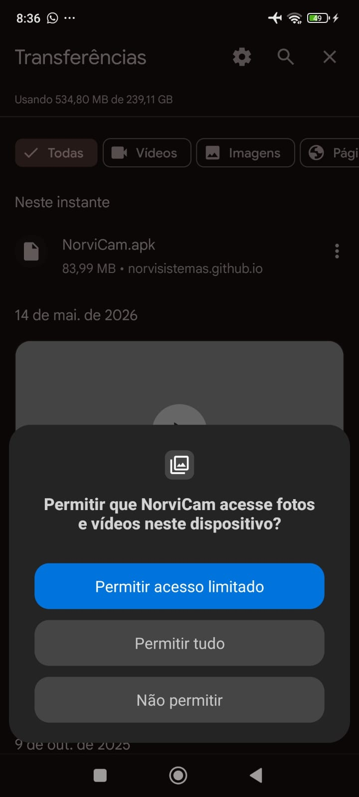
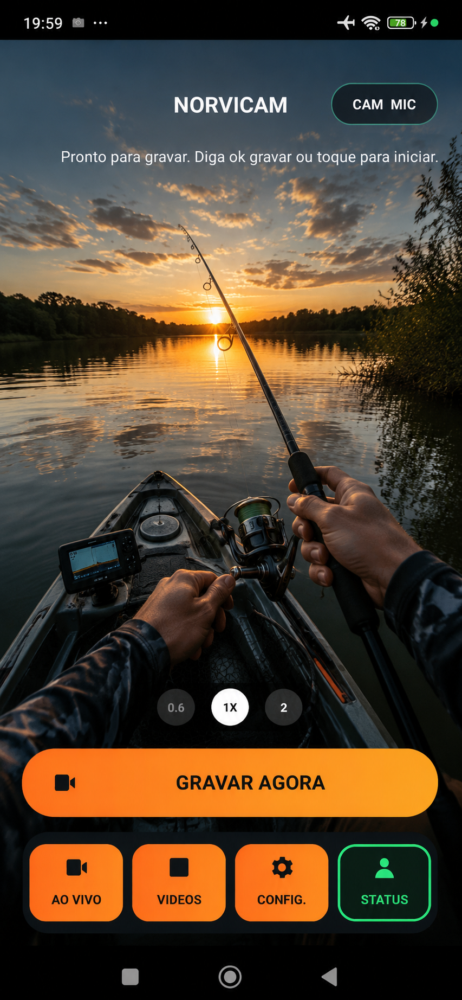
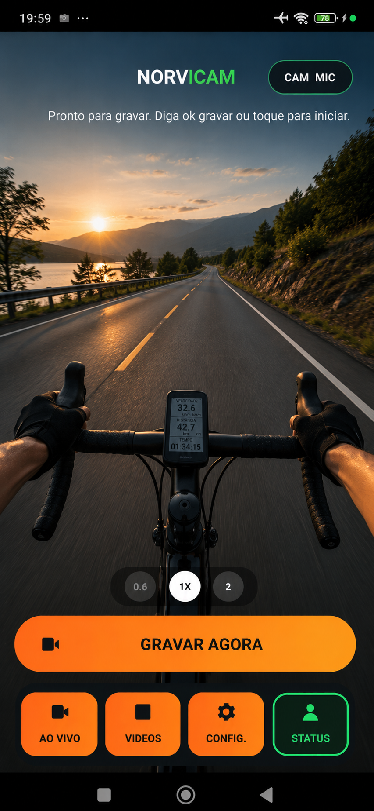
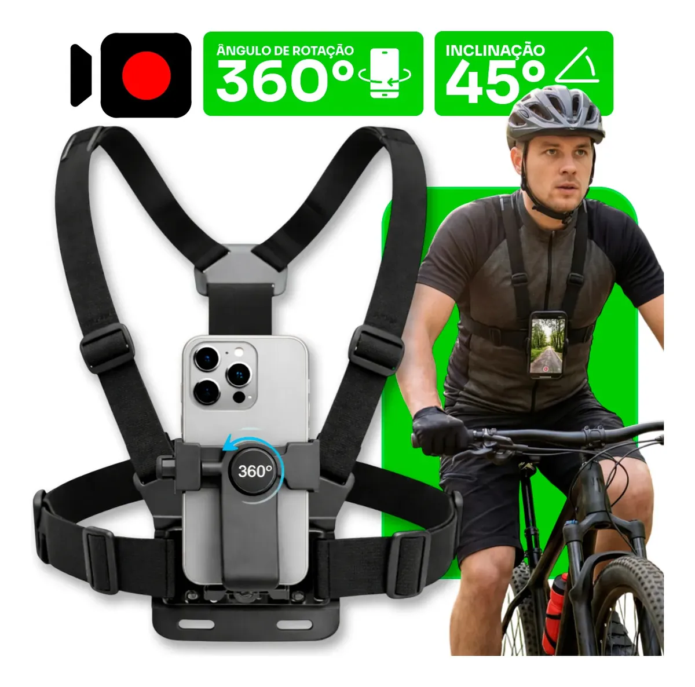
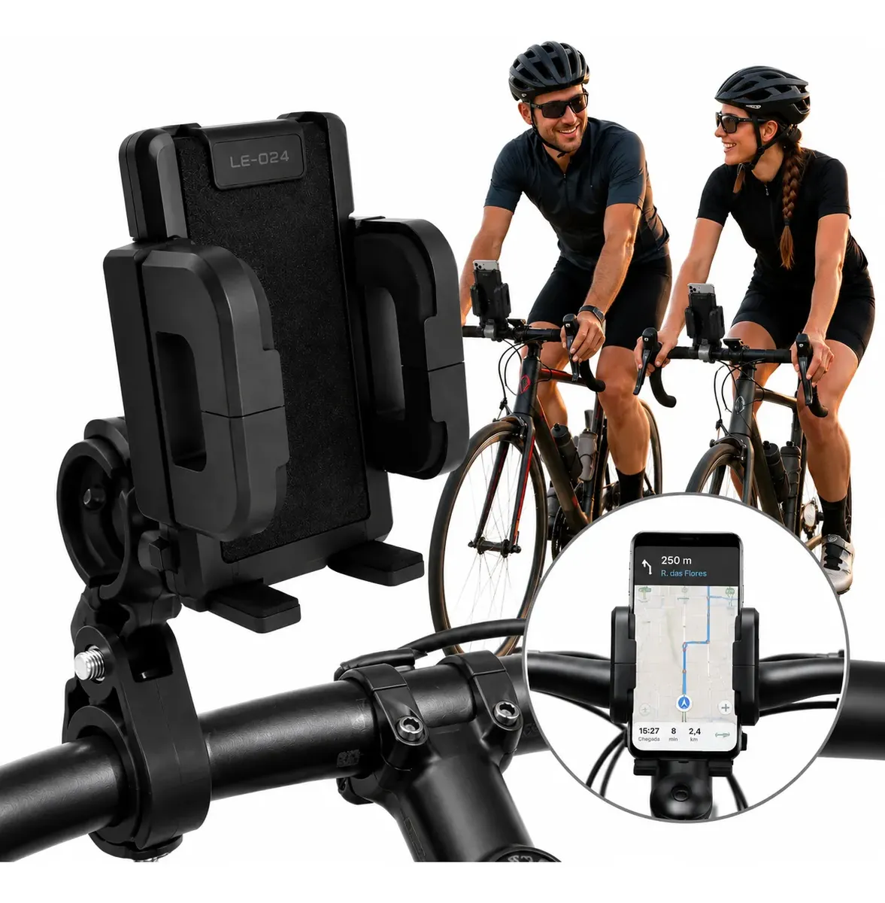
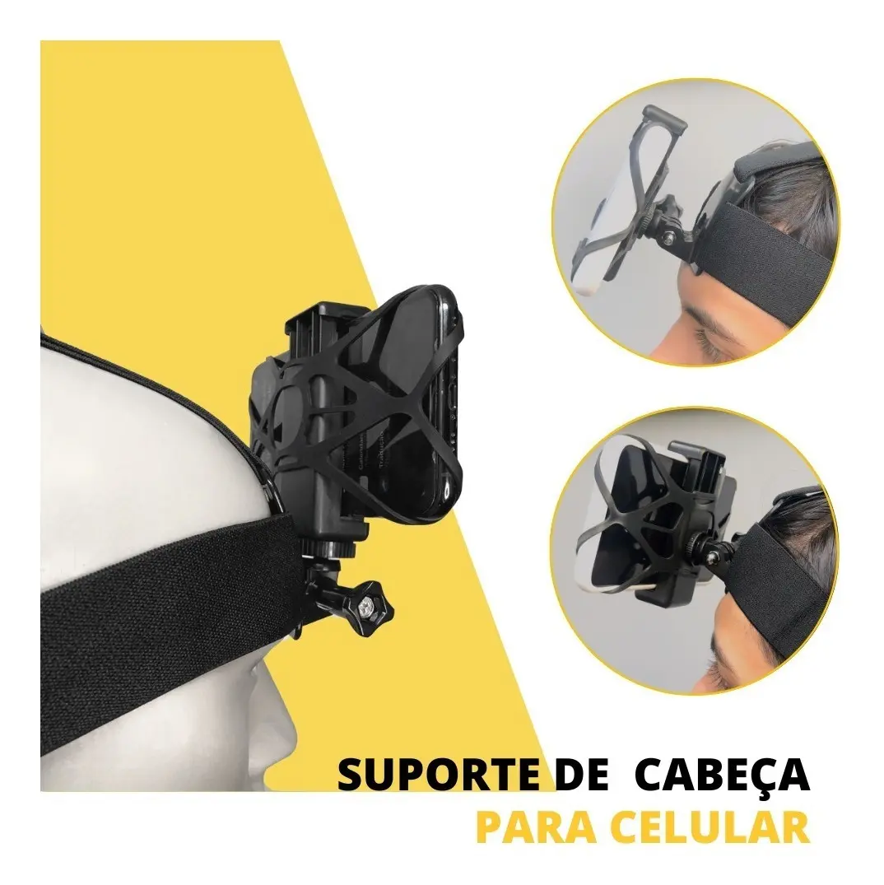

O app fica pronto e guarda os segundos anteriores ao comando.
Nunca mais perca
O momento perfeito
Use seu celular no suporte de peito, fale o comando e deixe o NorviCam gravar antes, durante e depois da ação.
Pré-gravação inteligente
Comando por voz
Gravação contínua
Feito para suporte
Android 7.0+
Teste grátis por 3 dias
Controle por voz offline

Como funciona
Use no suporte de peito, guidão, mochila ou onde a câmera fique livre.
Use a frase configurada para iniciar ou parar sem encostar na tela.
O vídeo vai para a galeria do NorviCam, pronto para assistir ou compartilhar.
Benefícios do NorviCam
Com o buffer de 15s ou 30s, o app salva também o que aconteceu antes do comando.
Ideal para bike, pesca, moto, trilha, corrida e qualquer momento em que tocar na tela atrapalha.
Você pode escolher a frase de ativação para evitar que outra pessoa acione seu app.
Com as permissões certas, o NorviCam continua pronto mesmo com a tela apagada.
Grave com som, alta qualidade e galeria própria para encontrar suas capturas rapidamente.
Acompanhe se o app está pronto, gravando, salvando ou aguardando comando.
Como instalar com segurança
Como o NorviCam ainda é baixado por APK, o Android pode mostrar avisos antes de instalar. Isso é normal para apps fora da Play Store. Baixe somente pelo link oficial e aceite as permissões para câmera, microfone, vídeos, notificações e bateria para o app funcionar corretamente.

1Verifique o app
Se o Play Protect aparecer, toque em Verificar app para o Android analisar o APK.

2Confira a segurança
Quando aparecer que passou nos testes, toque em Abrir para iniciar o NorviCam.

3Permita o microfone
Toque em Durante o uso do app. Sem microfone, o comando de voz e o áudio não funcionam.

4Permita vídeos
Escolha Permitir tudo para o app salvar e mostrar suas gravações na galeria.


Suportes indicados
O NorviCam funciona melhor quando o celular fica firme e apontado para a ação. Escolha o suporte ideal para o seu esporte e grave por comando de voz sem tirar as mãos do guidão, da vara, da trilha ou do equipamento.

Peito
Suporte de peito
Ideal para bike, moto, pesca, trilha e caminhada. Deixa o celular preso ao corpo para capturar a visão da ação.

Bike ou moto
Suporte de guidão
Boa opção para deixar o celular fixo na bike ou moto, com enquadramento frontal e acesso rápido ao NorviCam.

Cabeça
Suporte de cabeça
Para quem quer gravar exatamente para onde está olhando, mantendo as mãos livres durante a atividade.
Planos
Premium completo
NorviCam Premium
Todos os recursos do app para transformar seu celular em câmera de ação por voz.
R$ 12,90 /mês
Bom para testar sem compromisso. Nos planos maiores, o valor mensal fica menor.
- Buffer inteligente de 15s ou 30s
- Gravação contínua com áudio
- Grava com a tela apagada
- Comandos de voz personalizados e offline
- Qualidade 720p, 1080p e 4K quando disponível
- Estabilização em aparelhos compatíveis
- Câmera traseira e frontal
- Zoom 0.6x, 1x e 2x quando suportado
- Galeria com vídeos salvos e exclusão
- Status do app e monitoramento
- Aviso de voz quando fica pronto
- Uso com suporte no peito
Assinatura segura
Ative pelo mesmo e-mail do app
Informe o e-mail que você usa para entrar no NorviCam. Depois do pagamento aprovado no Asaas, o acesso é liberado automaticamente.
Para quem quer começar sem compromisso.
Desconto para quem já vai usar nas próximas aventuras.
Melhor custo-benefício para temporada.
Maior desconto para uso contínuo.
Perguntas frequentes
O app funciona offline?
Sim. A gravação e o comando de voz local funcionam no aparelho, sem enviar áudio para a internet.
Por que preciso liberar permissões?
Porque o app usa câmera, microfone, notificações e gravação em segundo plano. Sem isso, alguns recursos podem falhar.
Posso cancelar quando quiser?
Sim. Você pode escolher mensal, 3 meses, 6 meses ou anual conforme seu uso.